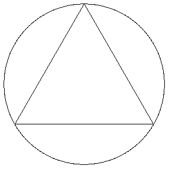
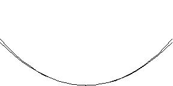

Part III Wrap-Up
The Circle
Here we have the attempt to reach a circle by increasing the number of sides of a polygon:
At the end of the animation, the polygon has 48 sides. How far off is it?
The Catenary
A hanging chain:
Galileo thought that the shape of a hanging chain is a parabola. Here is a parabola superposed upon the shape of a hanging chain.
How far off is Galileo?
The Planetary Orbits
We'll finish up Part III with a direct comparison between a geometric explanation for the motion of the planets, and a physical understanding. Recall Kepler in chapter 4:
"[T]he point of the equant is nothing but a geometrical short cut for computing the equations from a hypothesis that is clearly physical." (p.135)
That the equant theory is not actually true is demonstrated in Part II, through the failure of the Vicarious Hypothesis. In chapter 32, we find the shadow of the physical principle approximated by the equant:
"In all hypotheses constructed according to this Ptolemaic form [of the equant]... the speed at perihelion and slowness at aphelion are very closely proportional to the lines drawn from the center of the world to the planet." (p.373)
This observed effect of the principle of gravitation provides a means of measuring the total time required for motion along a planetary arc. Since time to traverse an arc as measured along "least parts of the circumference" is proportional to the distance from the sun, adding up the distances from the sun gives the time of motion.
“Since, therefore, the times of a planet over equal parts of the eccentric are to one another as the distances of those parts, and since the individual points of the entire semicircle of the eccentric are all at different distances, it was no easy task I set myself when I sought to find how the sums of the individual distances may be obtained. For unless we can find the sum of all of them (and they are infinite in number) we cannot say how much time has elapsed for any one of them. Thus the equation will not be known. For the whole sum of the distances is to the whole periodic time as any partial sum of the distances is to its corresponding time.To look at the sum of these distances, Kepler adopts the approach of Archimedes:
“I consequently began by dividing the eccentric into 360 parts, as if these were least particles, and supposed that within one such part the distance does not change.... As a result, I have so arranged it that as the sum of the distances is to the sum of the time, so is any given distance to its time.”
And since I knew that the points of the eccentric are infinite, and their distances are infinite, it struck me that all these distances are contained in the plane of the eccentric. Archimedes... once thus divided the circle into an infinity of triangles... Accordingly, instead of dividing the circumference, as before, I now cut the plane of the eccentric into 360 parts...Kepler uses area (a plane figure, not a linear one) to measure time:
I could conclude that by computing the area... I would have the sum of the infinite distances... not because the infinite can be traversed, but because I thought that the measure of the faculty by which the collected distances mete out the times is contained in this area, so that we would be able to obtain it by knowing the area without an enumeration of least parts...
Thus the area CGA becomes a measure of the time.
Now, let's compare the path of the planet under Kepler's hypothesis of equal-area equal-time, with the closely approximating equant hypothesis. Here, the location of the earth, according to equal-time, equal-area is blue, the location of the earth according to the equant theory is red.
When does a gap matter?
This should give you a good idea of why the equant seems to work so well -- for the eccentricities of the planets, it is very close to the path left behind by the physical principle of gravitation. But so is the polygon to the circle, and the parabola to the catenary. But none of them are the true, knowable principles.
More:
- Try to make a parabola match a catenary:
- Catenary vs Parabola Java program
| On to Part IV! |